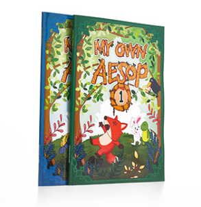

- 스피킹 버디의 말하기 전략 3P 학습법
-
원어민처럼 자연스러운 영어 말하기를 하기 위해서는 무엇을 말해야
할지 알아야 하고 충분히 연습해야 하며 말하기 경험을 쌓아야 합니다.
스피킹 버디는 3P 영어 학습 전략을 통해 모든 부분을 제공합니다.
"원어민 처럼 영어 말하기" 3P 학습 전략을 위한 전체 구성을 살펴보세요!
3P 학습법은 학습자가 무엇을 말해야 할지 정확히 인지(Presentation) 하고, 충분히 연습(Practice) 하여 자연스럽고 유창하게 말하기 (Production)를 할 수 있도록 합니다.
이 선희, 편집자 이 보영 토킹 클럽 전, Chicago Uni. 석사
"영어는 잘하는데 수줍어 말을 잘 못하는 아이들 또는 영어에 흥미를 잘 갖지 못하는 아이들을 많이 보며 아쉬운 생각이 항상 들었습니다. 그래서 이번 교재를 기획하며 영어 초보인 아이들은 즐겁게 그리고 여린 아이들도 마음 편하게 맘껏 편하게 영어를 말하며 배울 수 있는데 초점을 맞추었습니다." 2020-01-20
즐거운 이솝우화 스토리를 통해 영어 상상력을 높이고 듣기와 읽기, 쓰기와 같은 표현력이 강화됩니다.
이솝우화의 결말을 선택할수 있습니다.
상상력을 높이고 읽기와 듣기에 몰입하게 됩니다.
같이 제공되는 실물 교재에 이야기를 정리합니다. 즐겁게 액티비티를 하며 나만의 이솝우화를 구성해 보면서 핵심 내용을 파악하면서 쓰기 능력도 같이 향상됩니다.
 이솝우화 실물 교재 이미지초등생이 반드시 알아야 할 800단어에 더해 400단어를 추가하여 총 1,200단어 이상을 습득 할 수 있습니다.
자녀의 정보와 학습 진척도를 확인할 수 있습니다.
학생 스스로 학습 활동을 확인할 수 있는 애플리케이션